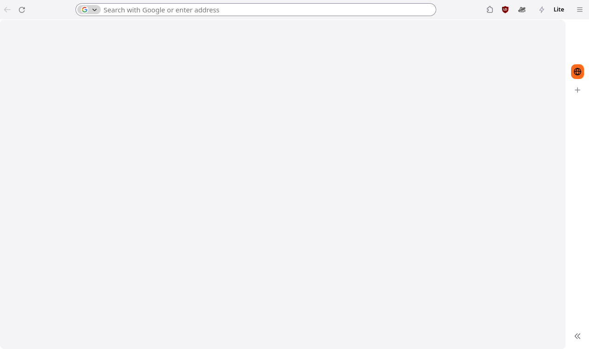

Abre la web con una mala conexión.
Blaze es un navegador basado en Firefox, pensado para la velocidad y la ligereza. Descarga menos por cada página, recuerda dónde se quedó una descarga y conserva uBlock Origin y Privacy Badger.
Blaze está en alfa y funciona en Linux (x86_64). La primera versión, 0.1.0, es una prerelease. También puedes compilarlo desde el código: los pasos están en el README.
Plano, compacto y en dos tonos


Capturas de una ventana real de Blaze. Solo se ve la interfaz del navegador; el área de la página sale vacía por la forma en que se toman las capturas.
Lo que obtienes
- Modo Lite
- Un interruptor arriba a la derecha evita que se carguen imágenes, fuentes web y video. En páginas de noticias pesadas ahorró entre el 44 % y el 61 % de los bytes.
- Descargas que se reanudan
- El motor de descargas reparte un archivo en varias conexiones y continúa tras un cierre inesperado, un corte de luz o una conexión caída. Hoy funciona desde la línea de comandos y baja los componentes de Blaze. Conectarlo al botón de descargas del navegador es el siguiente paso.
- Tus extensiones
- uBlock Origin y Privacy Badger vienen instaladas. Cualquier otra de addons.mozilla.org se instala como siempre.
- Spotify y Netflix funcionan
- Widevine viene activado. Si prefieres no contactar los servidores de Google para eso, se apaga con un ajuste.
- Privado por defecto
- Sin telemetría, sin cuentas, solo HTTPS y protección estricta contra rastreo. Medimos todos los servidores con los que Blaze se conecta y los listamos todos. Leer PRIVACY.md
- Actualizaciones que decides tú
- Blaze consulta GitHub una vez al día, te muestra qué trae la versión nueva y la descarga solo si dices que sí. Las versiones van firmadas y Blaze rechaza una actualización que no lo esté.
- Un Firefox que no cambia solo
- Blaze incluye un Firefox concreto y probado, y apaga el actualizador de Firefox, así que una actualización de Firefox no puede romper la interfaz. Las versiones nuevas de Firefox llegan dentro de las versiones de Blaze.
- Pequeño en disco, ligero en memoria
- La aplicación Blaze pesa menos de 5 MB. En nuestras pruebas usó entre un 27 % y un 36 % menos memoria que Firefox tal como viene, con las mismas páginas abiertas.
Los números y dónde terminan
Cada cifra es una sola corrida en una sola máquina. Tómalas como una dirección, no como una promesa.
| Escenario | Firefox | Blaze | Diferencia |
|---|---|---|---|
| Una pestaña en blanco | 815 MB | 522 MB | 36 % menos |
| Una pestaña, Wikipedia | 878 MB | 637 MB | 27 % menos |
| Cuatro páginas a la vez | 1021 MB | 689 MB | 33 % menos |
Blaze sigue siendo Firefox. Una pestaña con video cuesta lo que cuesta una pestaña con video, y unos 500 MB para una pestaña es el piso que encontramos con este motor. No podemos decir con honestidad que Blaze sea el navegador más ligero que existe: solo medimos Firefox, y los navegadores diminutos que dejan fuera la web moderna siempre usarán menos.
El primer arranque no es ligero. Blaze descarga Firefox una vez (86 MB, verificado contra un checksum publicado) y después Firefox baja unos 43 MB en segundo plano: Widevine 17 MB, listas de Safe Browsing 10 MB, listas de bloqueo de Mozilla 8 MB y las listas de uBlock Origin y Privacy Badger 5 MB. Todo se puede reanudar si la conexión se cae.
Instalar
- Descarga el AppImage desde la página de versiones. Va firmado; el README explica cómo verificarlo.
- Hazlo ejecutable y ábrelo.
chmod +x Blaze-*-x86_64.AppImage ./Blaze-*-x86_64.AppImage - Espera el primer arranque. Blaze descarga y verifica su Firefox. Si lo cierras a la mitad, continúa donde se quedó.
¿Prefieres compilarlo tú? Necesitas el SDK de .NET 10; el README lista los comandos exactos.